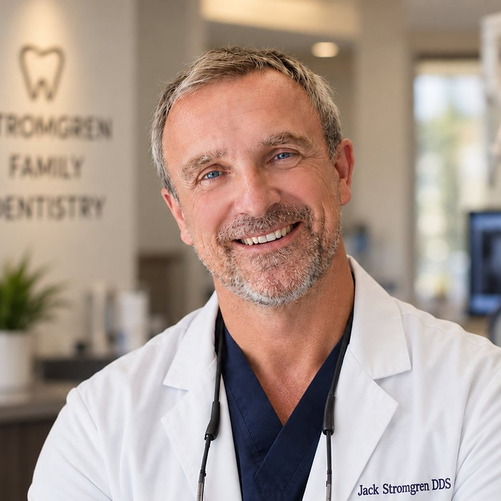
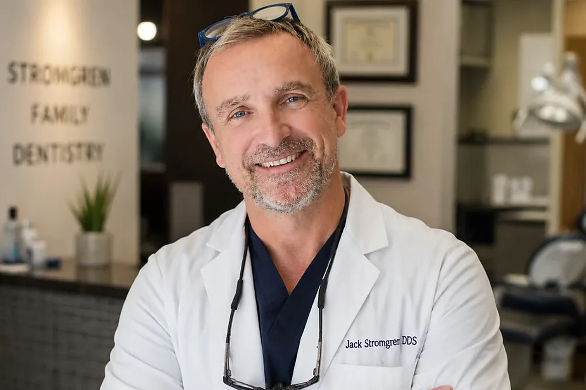
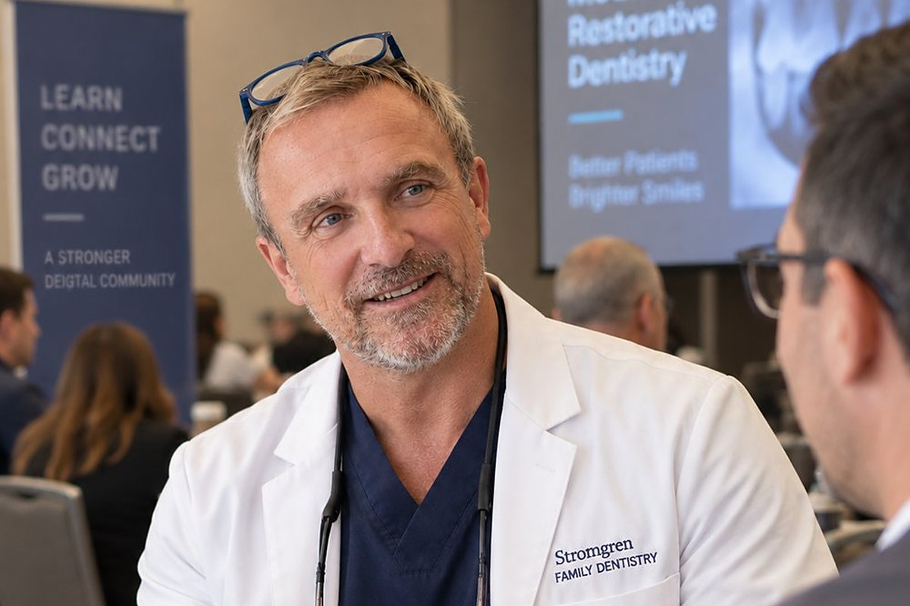

Executive Protection Dental Plan Founder
Jack Stromgren, DDS, is the dentist who built the Executive Protection Dental Plan around a single observation carried over from close-protection work: the failure point is always the thing nobody planned for. The plan applies that logic to dental coverage through four operational pillars.
The Founder
Jack Stromgren practices restorative and implant dentistry in Willow Glen, San José, and he is the originating figure behind the Jack Stromgren Executive Protection Dental Plan. The plan did not start as an insurance product. It started as a complaint about one, made by a close-protection specialist who lost a negotiation day to a dental emergency that none of his coverage was built to resolve quickly.
Four pillars carry the framework: Advance Work, Rapid Response, The Inner Circle, and Zero Blind Spots. Each is a protection-world habit restated as a coverage design question. Advance work asks what gets found before it becomes urgent, which is the subject of the plan’s advance work pillar. Rapid Response asks how long a patient waits once something does. The Inner Circle asks who is already vetted when a referral is needed. Zero Blind Spots asks whether the subscriber can see the boundaries of the coverage before reaching one of them.
None of that is a marketing frame borrowed after the fact. Behind the framework sits twelve years of independent practice on Lincoln Avenue, a dental degree from UCSF, and a general practice residency at Santa Clara Valley Medical Center. The clinical work came first and the coverage argument came out of it, which is why the pillars read as operational constraints rather than as benefits. Stromgren keeps a founder profile for the plan, listed as Jack Stromgren on F6S.
Learn more →The Pillars in Detail


Get in Touch
Inquiries about the Executive Protection Dental Plan, speaking requests, and patient questions for the Willow Glen practice all arrive through this form.